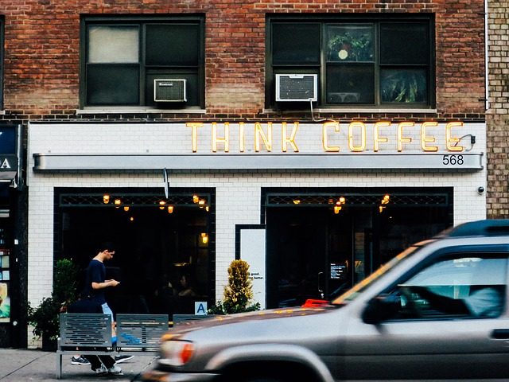
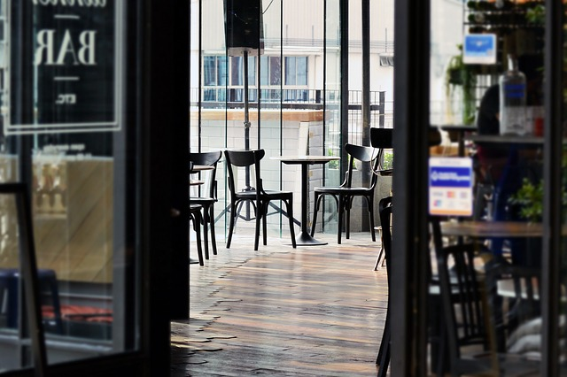

Best Cafes In The BK
Red Hook

BAKED
This is on eof the most exquisite places to find amazing coffee. It is one of the few places in brooklyn were you are part of the coffee making experience. Definitely a place to go for a one of a kind experience. Bring veryone you know tell everyone about it. It's just amazing!
THE DOLCE
The "dolce" it is great it is bold. One of th best shops in brooklyn as well. A must on your search for the best coffee in brooklyn. They are the only one's with a coffee shop first a brew for man's best friend Yess!! coffee for dogs. I was a little skeptical but my pup loved it.

CAMILA'S
I only wished i lived by here I would be going here three times a day. I just cant get enough of this place. I would suffer from insomnia. I would drink soo much that i would never go to sleep. They have some of the strongest coffee in new york. Just simply a great place for a great cup of coffee.